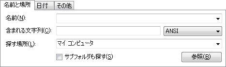
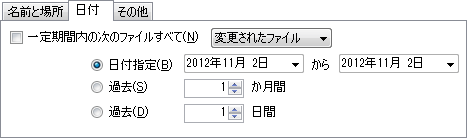
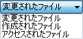
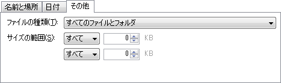

検索するファイル／フォルダの名前を入力します。
完全に一致した名前を検索する場合は、名前を"（ダブルクオーツ）で囲んで下さい。
又、空白が含まれる名前を検索する場合も同様に、名前を"（ダブルクオーツ）で囲むか、[オプション]の[空白を含める]を有効にして下さい。
"Documents and Settings"
上記は、Documents and Settingsと言う名前がヒットします。
但し、" で囲まれた文字列は完全に一致した名前しかヒットしないので、
例えばThe Documents and Settings and Othersと言う名前もヒットさせるには、ワイルドカードを追加して
"*Documents and Settings*"
と指定するか、[オプション]の[空白を含める]を有効にし、
Documents and Settings
と指定して下さい。
メニューバーのオプションメニューで大文字と小文字を区別、正規表現を使用の設定が出来ます。
以下のワイルドカードが使用出来ます（正規表現を使用しない場合）。
任意の0文字以上の文字
任意の1文字
AND検索、OR検索が出来ます。ANDとORを組み合わせる場合、ANDが優先されます。（全てのAND条件に含まれる物がヒットします。）
"名前1" OR "名前2"
"名前1";OR "名前2"
"名前1";"名前2"
"名前1" "名前2"
"名前1"/"名前2"
上記は、名前1と完全に一致するか名前2と完全に一致するファイルがヒットします。
"名前1" OR 名前2
"名前1";OR 名前2
"名前1";名前2
"名前1" 名前2
"名前1"/名前2
上記は、名前1と完全に一致するか名前2と一致するファイルがヒットします。
AND／ORの文字は半角で、大文字でも小文字でも構いません。
右側のドロップダウンボタン（▼）をクリックすると、履歴が表示されます。
履歴はpffs.exeのある場所のpffs.logと言うファイルに保存されます。
このファイルを削除するか、テキストエディタ等で開いて文字列を全て削除すると履歴を消去する事が出来ます。
ファイルにバイナリレベルで含まれる文字列を指定します。
文字のエンコードによってバイナリデータ値が変わる為、同じ文字でもエンコードが異なる場合、ヒットしません。
又、大文字と小文字の区別、正規表現の使用はこの項目には関係ありません。
検索するパスを指定します。
任意に入力する他、右端のドロップダウンボタン（▼）で登録された一覧の中から選択する事が出来ます。
一番上にはマイ コンピュータが登録されています。
マイ コンピュータを選択すると全てのドライブを検索対象とします。この場合、ドライブ単位で並列処理を行う事が出来ます。
その次にマイ ドキュメント、マイ ピクチャ、マイ ビデオ、マイ ミュージックのフォルダ、各ドライブの順に登録されますが、Windowsのバージョン／環境により異なる場合があります。
参照ボタンで場所を指定する事も出来ます。
探す場所で指定したパスのサブフォルダも検索します。
リパース ポイント(ジャンクション)をスキップしたい場合、起動オプションに /skipreparsepoint を追加して起動して下さい。
リパース ポイント(ジャンクション)はスキップします。
探す場所に現在のWindowsの環境に存在するパスをダイアログで指定する事が出来ます。

チェックすると、検索条件に日付を加える事が出来ます。

変更された日付が該当するファイル／フォルダがヒットします。
作成された日付が該当するファイル／フォルダがヒットします。
アクセスされた日付が該当するファイル／フォルダがヒットします。
日付単位で特定の区間を指定します。
左側に最も古い日付、右側に最も新しい日付を指定する事で、指定した日付の種類がその区間に含まれるファイル／フォルダがヒットします。
左側の日付には既定で3ヶ月前の日付が設定されます。
左側の日付を変更しなければ、右側の日付より古い日付が全て該当します。
右側には起動時の日付（新しい条件を実行した場合、その時の日付）が指定されます。
右側の日付を変更しなければ、左側の日付から現在までの日付が全て該当します。
日付は直接入力する事が出来ますが、右側の▼をクリックするとカレンダー形式のGUIで選択出来ます。
過去から現在までの月数を指定します。
過去から現在までの日数を指定します。

検索するファイルの種類（拡張子）を指定します。
PF File searchでは単純に拡張子で区別しているので、例えば .jpg と .jpeg は区別されます。
ファイルを指定するとファイルのみがヒットします。
フォルダを指定するとフォルダのみがヒットします。
その他は、レジストリ情報を元に拡張子と種類名が表示されます。
特定の拡張子のみを指定したい場合はここで指定して下さい（名前に *.txt 等と指定するよりも検索効率が良くなります。）。
検索するファイルのサイズを指定します。
サイズはキロバイト（KB）単位で指定します。
左側のプルダウンで範囲を選択し、右側にサイズを数値で入力します。
サイズを指定した場合、フォルダはヒットしません。
サイズを限定しません。
最低サイズを指定します。
指定したサイズ以上のファイルがヒットします。
最高サイズを指定します。
指定したサイズ以下のファイルがヒットします。